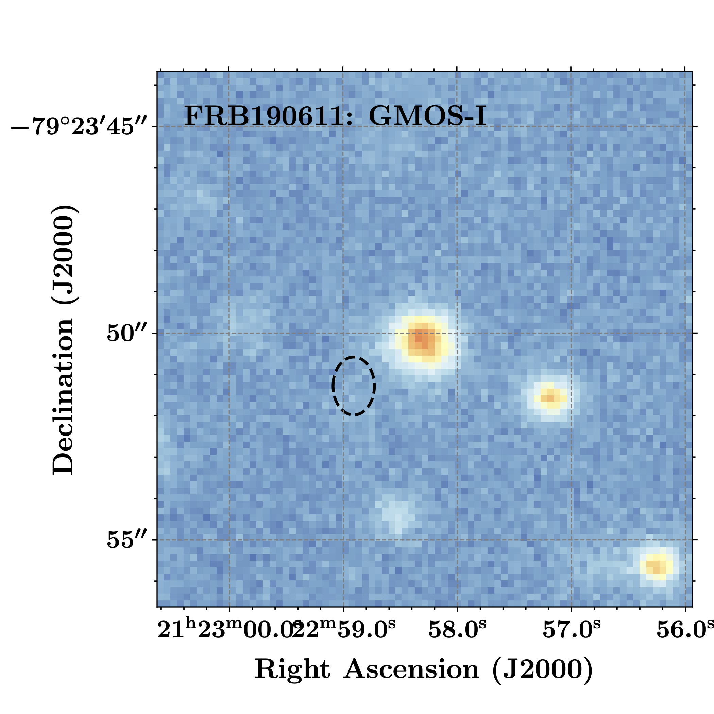

FRB 190611
Image from Heintz et al., 2020 (arXiv: 2009.10747)
Summary
- Detected by: ASKAP-ICS
- FRB coordinates (RA, Dec): 21:22:58.91 -79:23:51.3 (J2000)
- Host coordinates (RA, Dec): 21:22:58.71 -79:23:49.6 (J2000)
- Redshift: 0.3778
- Observed DM: 321.4 pc cm-3
- Repeating: No
- References: Macquart et al., 2020, Nature, 581, 391;
Day et al., 2020, MNRAS, 497, 3335;
Heintz et al., 2020 (arXiv: 2009.10747)
Host galaxy properties
| Quantity | Measured value | Unit |
|---|---|---|
| Stellar mass | ∼ 0.75 × 109 | M⊙ |
| Star-formation rate | 0.27 ± 0.08 | M⊙/yr |
| Metallicity | 8.71+0.17-0.28 | 12+log(O/H) |
| Half-light radius | 2.15 ± 0.11 | kpc |
| FRB offset from galaxy center | 11.4 ± 3.5 | kpc |
Emission line fluxes
| Emission line | Measured value |
|---|---|
| Hα | 0.49 ± 0.05 |
| Hβ | 0.12 ± 0.03 |
| [OIII] λ 5007 | 0.18 ± 0.04 |
| [NII] λ 6584 | 0.12 ± 0.04 |
Photometry
| Telescope | Filter (eff. wavelength) | Magnitude (AB) |
|---|---|---|
| GMOS-S | r (630 nm) | 22.07 ± 0.15 |
| GMOS-S | i (780 nm) | 22.34 ± 0.15 |